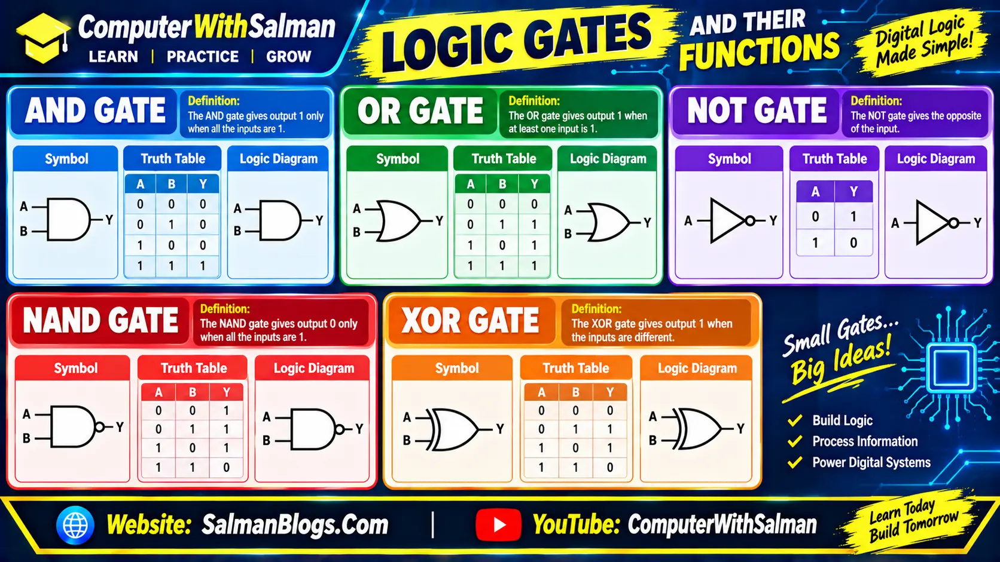

System Design and Troubleshooting
1. System Design
System design is the process of planning and creating a system by deciding how its different components will work together to achieve a specific goal.
Example: Designing a school management system that stores students' records, manages attendance, and calculates marks.
2. Troubleshooting
Troubleshooting is the process of identifying, diagnosing, and fixing problems in a computer system, software, hardware, or network.
It helps restore the system to its normal working condition.
Example: If a computer cannot connect to the internet, troubleshooting may involve checking the Wi-Fi connection, restarting the router, and checking network settings.
Digital Systems
A digital system is a system that uses digital technology to receive, process, store, and share data. It works with digital signals, usually represented by binary digits 0 and 1.
Digital systems are used in computers, smartphones, ATMs, digital cameras, and many other devices.
1. Analog Signal
An analog signal is a signal that changes continuously over time and can have many different values within a range.
Examples of Analog Signals
- Human voice
- Microphone signals
- Radio signals
- Analog clock
- Analog speedometer
- Analog voltmeter
- Heartbeat signals
2. Digital Signal
A digital signal is a signal that represents information using separate, distinct values. In computers, digital signals are commonly represented using binary digits 0 and 1.
Examples of Digital Signals
- Computer data
- Digital clock displays
- Data stored on USB drives
- Digital communication signals
- Smartphone data
- Laptop data
- Digital thermometer readings
- Calculator displays
Difference Between Analog and Digital Signals
| Analog Signal | Digital Signal |
|---|---|
| It is continuous. | It is discrete. |
| It can have infinitely many possible values within a range. | It uses a finite set of values, usually 0 and 1 in computers. |
| Example: Sound waves. | Example: Binary data in computers. |
1. Analog-to-Digital Converter (ADC)
An Analog-to-Digital Converter (ADC) is a device or electronic circuit that converts an analog signal into digital data that a computer or digital system can process.
Example: A microphone receives sound waves and converts them into an electrical analog signal. An ADC then converts that signal into digital data so a computer can record and process the sound.
2. Digital-to-Analog Converter (DAC)
A Digital-to-Analog Converter (DAC) is a device or electronic circuit that converts digital data into an analog signal that can be used by analog devices.
Example: A computer stores music as digital data. A DAC converts this data into an analog electrical signal that is sent to speakers or headphones to produce sound.
Why Do We Use ADC and DAC Conversion?
We use ADC and DAC to convert signals between analog and digital forms.
Example: When you record your voice on a computer, an ADC converts your voice into digital data so the computer can process and store it. When you play the recording, a DAC converts the digital data back into an analog signal so you can hear the sound through speakers or headphones.
Boolean Algebra
Boolean algebra is a type of mathematics that uses only two values: 0 (False) and 1 (True). It is used in digital systems and computer circuits to perform logical operations and make decisions.
Example: In a computer, 1 can represent ON or True, while 0 can represent OFF or False.
Logic Gates
Logic gates are electronic circuits that perform logical operations using binary inputs (0 and 1) and produce a binary output (0 or 1).
Main Types of Logic Gates
- AND Gate: The output is 1 only when all inputs are 1.
- OR Gate: The output is 1 when at least one input is 1.
- NOT Gate: Reverses the input; 1 becomes 0, and 0 becomes 1.
- NAND Gate: The opposite of the AND gate; the output is 0 only when all inputs are 1.
- XOR Gate: The output is 1 when the inputs are different.
Boolean Functions
A Boolean function is a mathematical expression that uses Boolean variables, which can have values of 0 or 1, and logical operations such as AND, OR, and NOT to produce an output of 0 or 1.
Example: F = A AND B
Boolean Expression
A Boolean expression is a mathematical expression that uses Boolean variables, which can have values of 0 or 1, and logical operators such as AND, OR, and NOT to represent a logical operation.
Example: A AND B
The output is 1 only when both A and B are 1. Boolean expressions are used to design and simplify logic circuits in digital systems.
Binary Variables
Binary variables are variables that can have only two possible values: 0 or 1. In digital systems, 0 usually represents False or OFF, while 1 represents True or ON.
Logic Operations
Logic operations are operations performed on binary values (0 and 1) to produce an output. The three basic logic operations are AND, OR, and NOT.
1. AND Operation
The AND operation produces an output of 1 only when both inputs are 1. Otherwise, the output is 0.
Symbol: ∧ or ·
Truth Table:
| A | B | A · B |
|---|---|---|
| 0 | 0 | 0 |
| 0 | 1 | 0 |
| 1 | 0 | 0 |
| 1 | 1 | 1 |
Example: A AND B
2. OR Operation
The OR operation produces an output of 1 when at least one input is 1. The output is 0 only when both inputs are 0.
Symbol: ∨ or +
Truth Table:
| A | B | A + B |
|---|---|---|
| 0 | 0 | 0 |
| 0 | 1 | 1 |
| 1 | 0 | 1 |
| 1 | 1 | 1 |
Example: A OR B
3. NOT Operation
The NOT operation reverses the input value. If the input is 1, the output is 0; if the input is 0, the output is 1.
Symbol: ¬ or a bar over the variable, such as A̅.
Truth Table:
| A | A̅ |
|---|---|
| 0 | 1 |
| 1 | 0 |
Example: NOT A
Truth Table
A truth table is a table that shows all possible combinations of binary inputs (0 and 1) and their corresponding outputs for a logic operation or Boolean expression.
Example: Truth table for the AND operation.
| A | B | A . B |
|---|---|---|
| 0 | 0 | 0 |
| 0 | 1 | 0 |
| 1 | 0 | 0 |
| 1 | 1 | 1 |
Given Boolean Function
F(A, B, C) = A · B + A̅ · C
Where:
- AND means logical AND.
- OR means logical OR.
- NOT A means the opposite of A.
Truth Table
| A | B | C | A̅ | A · B | A̅ · C | F(A,B,C) |
|---|---|---|---|---|---|---|
| 0 | 0 | 0 | 1 | 0 | 0 | 0 |
| 0 | 0 | 1 | 1 | 0 | 1 | 1 |
| 0 | 1 | 0 | 1 | 0 | 0 | 0 |
| 0 | 1 | 1 | 1 | 0 | 1 | 1 |
| 1 | 0 | 0 | 0 | 0 | 0 | 0 |
| 1 | 0 | 1 | 0 | 0 | 0 | 0 |
| 1 | 1 | 0 | 0 | 1 | 0 | 1 |
| 1 | 1 | 1 | 0 | 1 | 0 | 1 |
Uses of Boolean Functions in Computers
Boolean functions are used in computers to perform calculations, process data, and control the operations of digital systems.
1. Arithmetic Operations
Boolean functions are used in arithmetic circuits to perform calculations such as addition and subtraction. For example, logic gates help a computer add two binary numbers.
2. Data Processing
Boolean functions help computers process, compare, and manipulate data using logical conditions. Example: A computer can check whether a number is equal to zero or not.
3. Control Logic
Boolean functions control the working of computer components by making decisions based on specific conditions. Example: A computer may allow access when the correct password is entered.
Logic Gates and Their Functions
Logic gates are electronic circuits that perform logical operations on binary inputs (0 and 1) and produce a binary output (0 or 1). They are the basic building blocks of digital systems and computers.

System Troubleshooting
System troubleshooting is a step-by-step process of identifying, diagnosing, and fixing problems in a computer system.
Example: The laptop turns off automatically after a few minutes of use.
1. Identify the Problem
First, identify and understand the problem. For example, the laptop turns off automatically after running for a few minutes, even when the user is working on it.
2. Establish a Theory of Probable Cause
Think about the possible reasons for the problem. For example, the laptop may be overheating because its cooling fan is not working properly, its battery or charger may be faulty, or there may be a problem with the motherboard.
3. Test the Theory to Determine the Cause
Check the possible causes to find the actual problem. For example, check whether the laptop becomes unusually hot, whether its cooling fan is working, whether the battery and charger are functioning properly, and whether the motherboard has any faults.
4. Establish a Plan of Action to Resolve the Problem
Decide which steps should be taken to fix the problem. For example, if the laptop is overheating, plan to clear blocked air vents and have the cooling fan checked. If the battery, charger, or motherboard is faulty, plan to have the faulty component repaired or replaced.
5. Implement the Solution
Carry out the planned steps to solve the problem. For example, place the laptop on a hard, flat surface, ensure its air vents are clear, and arrange professional repair or replacement of the faulty component if necessary.
6. Verify Full System Functionality
Check whether the laptop is working properly after applying the solution. For example, use the laptop for a reasonable period to confirm that it stays on without shutting down unexpectedly.
7. Document Findings, Actions, and Outcomes
Record the problem, its cause, the steps taken, and the final result. For example, document that the laptop was overheating because of a faulty cooling fan, the fan was repaired, and the laptop now works properly without shutting down.
Importance of Troubleshooting in Computing Systems
Troubleshooting is important because it helps find and fix computer problems before they become serious. It keeps computers working properly, protects data, improves performance, and saves money.
1. Preventing Downtime
Troubleshooting helps find and fix problems early so that a computer does not stop working unexpectedly. This helps users continue their work without long interruptions.
Example: Finding a faulty power supply early can prevent a computer from shutting down suddenly during important work.
2. Ensuring Data Integrity
Troubleshooting helps find problems that may cause data loss or damage. Fixing these problems helps keep stored information accurate and safe.
Example: Detecting a failing hard drive allows users to back up important files before the drive stops working.
3. Improving Security
Troubleshooting helps find and fix security problems, such as viruses, malware, and unauthorized access. This protects important files and personal information from damage or theft.
Example: Removing malware can prevent it from damaging files or stealing private information.
4. Enhancing System Performance
Troubleshooting helps find the causes of a slow computer, frequent freezing, and system errors. Fixing these problems helps the computer run smoothly and efficiently.
Example: Finding and replacing faulty RAM can help prevent frequent computer crashes.
5. Extending Equipment Life
Troubleshooting helps find hardware problems early and prevents further damage to computer parts. This helps the equipment last longer.
Example: Fixing a faulty cooling fan can prevent overheating and protect the processor and motherboard from damage.
6. Saving Costs
Troubleshooting helps fix small problems before they become serious and expensive. This reduces repair costs and may prevent the need to replace costly computer parts.
Example: Replacing a faulty power supply early may prevent damage to the motherboard and other components.
Basic Hardware-Related Issues
Common Hardware Issues and Their Solutions
Issue: Cable Disconnection
Solution: Check that all cables are properly connected to the computer and their respective devices. If a cable is loose, reconnect it securely. Also, check for damaged cables and replace them if necessary.
Issue: Overheating
Solution: Ensure the computer's air vents are not blocked and the cooling fan is working properly. Keep the computer in a well-ventilated area and clean dust from the vents. If the problem continues, have the cooling system checked.
Issue: Peripheral Devices Not Working
Solution: Check that peripheral devices, such as the keyboard, mouse, printer, or scanner, are properly connected to the computer. Try another USB port, check the power supply if required, and update or reinstall the device drivers if necessary.
Hardware Diagnosis and Maintenance
Hardware diagnosis and maintenance help identify computer hardware problems, repair or replace faulty components, and keep the computer working properly.
1. Recognizing Hardware Failures
Recognizing hardware failures means identifying signs that a computer component is damaged or not working correctly. Finding these problems early can prevent further damage and data loss.
A. RAM Failures
RAM (Random Access Memory) is the temporary memory a computer uses to run programs and process data.
Common Symptoms:
- Frequent system crashes.
- Blue Screen of Death (BSOD).
- Computer restarting randomly.
- Computer failing to start.
- Poor performance or unexpected errors.
RAM Diagnostic Tools: Tools such as Windows Memory Diagnostic and MemTest86 can check RAM for memory errors.
Example: If a computer frequently crashes while running several applications, faulty RAM may be one possible cause.
B. Hard Drive Failures
A hard drive is a storage device used to store the operating system, programs, and files.
Common Symptoms:
- Unusual clicking or grinding noises from a mechanical hard drive.
- Slow performance.
- Frequent system crashes.
- Files becoming corrupted or inaccessible.
- Computer failing to start or showing disk error messages.
Hard Drive Diagnostic Tools: SMART (Self-Monitoring, Analysis, and Reporting Technology) checks and tools such as CrystalDiskInfo help monitor drive health.
Example: If a computer becomes unusually slow and files become inaccessible, the hard drive may be failing. Back up important files as soon as possible.
2. Replacement and Upgrading of Components
Replacing or upgrading hardware components can improve computer performance and extend its useful life.
A. Replacing or Upgrading RAM
To upgrade RAM, check the type, capacity, and speed supported by the motherboard. Purchase compatible RAM, turn off the computer, disconnect its power, and install the RAM correctly.
Example: If a computer becomes slow when several applications are open, adding more RAM may help it run more smoothly, provided insufficient memory is the cause.
B. Replacing a Hard Drive
To replace a hard drive, back up important data, choose a compatible drive, turn off the computer, disconnect its power, and replace the old drive. Then install the operating system if needed and restore the backed-up files.
Example: If a hard drive is failing, replacing it with a new drive can restore normal operation and reduce the risk of further data loss.
Note: An SSD (Solid-State Drive) can replace a compatible hard drive and often improves startup speed and overall responsiveness.
3. Security and Maintenance
Regular security and maintenance help keep a computer safe, stable, and efficient. They include updating software, fixing software problems, protecting against malware, and checking system performance.
A. Maintaining Software
Maintaining software means keeping programs updated and resolving problems that affect their performance or security.
Installing Updates and Software Patches
Software updates and patches fix errors, improve performance, and address security weaknesses.
Example: Updating Windows and installed applications can fix bugs, improve stability, and protect the computer against known security threats.
Resolving Software Conflicts
Software conflicts occur when two or more programs interfere with each other or cause system problems. These issues can sometimes be fixed by updating, reinstalling, or removing the conflicting software.
Example: If installing a particular application causes another program to crash, updating the affected programs or removing incompatible software may resolve the problem.
Exercise Short Questions and Answers
1. Define a Boolean function.
A Boolean function is a mathematical expression that uses binary values (0 and 1) and logical operations such as AND, OR, and NOT to produce an output of either 0 or 1.
2. What is the significance of the truth table in digital logic?
A truth table is a table that shows all possible combinations of input values and their corresponding outputs. It helps us understand how logic gates and digital circuits work. Truth tables are also used to verify Boolean expressions and design digital systems correctly.
3. Describe the function of a NOT gate with its truth table.
A NOT gate is a logic gate that reverses or inverts its input. If the input is 0, the output becomes 1. If the input is 1, the output becomes 0. A NOT gate has one input and one output.
Truth Table of NOT Gate:
| Input (A) | Output (A̅) |
|---|---|
| 0 | 1 |
| 1 | 0 |
4. Write the purpose of ADC and DAC.
ADC (Analog-to-Digital Converter): An ADC converts analog signals into digital data that a computer can understand and process. For example, it converts sound from a microphone into digital data.
DAC (Digital-to-Analog Converter): A DAC converts digital data into analog signals that can be used by analog devices. For example, it converts digital audio data into sound signals that are played through speakers or headphones.
5. Make the truth table of two variables A and B for AND operation.
The AND operation produces an output of 1 only when both inputs are 1. If either or both inputs are 0, the output is 0. The AND operation is represented by the symbol (·).
Truth Table of AND Gate:
| A | B | Output (A · B) |
|---|---|---|
| 0 | 0 | 0 |
| 0 | 1 | 0 |
| 1 | 0 | 0 |
| 1 | 1 | 1 |
6. What is the first step in the systematic process of troubleshooting?
The first step in the systematic troubleshooting process is to identify the problem. This involves observing the symptoms, gathering information, and understanding what is not working correctly. For example, if a laptop turns off automatically after a few minutes, this behavior should be identified as the problem.
7. After identifying a problem, what is the next step in troubleshooting?
After identifying the problem, the next step is to establish a theory of probable cause. This means considering the possible reasons for the problem. For example, if a laptop shuts down unexpectedly, possible causes may include overheating, a faulty battery or charger, or a motherboard problem.
8. Describe the importance of testing a theory during the troubleshooting process.
Testing a theory is important because it helps determine the actual cause of a computer problem. It allows the technician to check whether a suspected cause is correct before applying a solution. This reduces unnecessary repairs, saves time and money, and helps ensure that the correct problem is fixed.
Multiple Choice Questions (MCQs) on System Design, Digital Systems, Boolean Algebra, and Troubleshooting
Test Yourself: Interactive MCQs (System Design, Digital Systems, Boolean Algebra, and Troubleshooting)
FAQs
System Design, Digital Systems, Boolean Algebra, and Troubleshooting FAQs
Find answers to common questions about system design, analog and digital signals, ADC and DAC conversion, Boolean algebra, logic gates, truth tables, system troubleshooting, hardware diagnosis, computer maintenance, and software security.
System design is the process of planning and creating a system by deciding how its different components will work together to achieve a specific goal. For example, a school management system can manage student records, attendance, and examination results.
Troubleshooting is the systematic process of identifying, diagnosing, and fixing problems in computer hardware, software, or networks. It helps restore a computer system to its normal working condition and reduces unnecessary downtime.
A digital system is a system that uses digital technology to receive, process, store, and share data. Computers, smartphones, ATMs, and digital cameras are common examples. Digital systems commonly represent information using binary digits 0 and 1.
An analog signal changes continuously over time and can have many possible values within a range. A digital signal represents information using distinct values, commonly 0 and 1 in computer systems. Sound waves are an example of analog signals, while binary computer data is an example of digital information.
An Analog-to-Digital Converter (ADC) converts an analog signal into digital data that a computer or digital device can process and store. For example, an ADC converts an analog electrical signal from a microphone into digital audio data.
A Digital-to-Analog Converter (DAC) converts digital data into an analog signal. It is commonly used in audio systems to convert digital audio data into an electrical signal that can drive speakers or headphones and produce sound.
ADC and DAC are used to convert information between analog and digital forms. An ADC allows a computer to process real-world signals, such as sound from a microphone. A DAC converts digital information into analog signals, such as the audio signal sent to speakers or headphones.
Boolean algebra is a mathematical system that uses two values, 0 (False) and 1 (True), to represent logical conditions. It uses operations such as AND, OR, and NOT and is important in designing digital circuits and computer systems.
Logic gates are electronic circuits that perform logical operations on binary inputs and produce binary outputs. Common types include AND, OR, NOT, NAND, and XOR gates. They are the basic building blocks of digital circuits and are used in computer processors and other digital devices.
A Boolean function is a mathematical function that uses binary variables and logical operations to produce an output of 0 or 1. For example, F = A · B represents an AND operation, which produces an output of 1 only when both A and B are 1.
A truth table displays all possible combinations of input values and their corresponding outputs for a logical operation or Boolean expression. It helps students understand logic gates, verify Boolean expressions, and design digital circuits correctly.
The main steps are identifying the problem, establishing a theory of probable cause, testing the theory, creating a plan of action, implementing the solution, verifying system functionality, and documenting the findings and results.
Troubleshooting helps prevent downtime, protect data, improve system performance, identify security problems, extend hardware life, and reduce repair costs. Finding problems early can prevent minor faults from developing into more serious and expensive issues.
RAM failures may cause frequent crashes, unexpected restarts, blue screen errors, and boot problems. Hard drive failures may cause slow performance, corrupted or inaccessible files, disk errors, and unusual clicking or grinding noises from mechanical drives. Important files should be backed up promptly if drive failure is suspected.
Regular software maintenance includes installing updates and security patches, removing malware, and resolving software conflicts. These actions help fix bugs, address known security weaknesses, improve system stability, and protect files and personal information from potential threats.